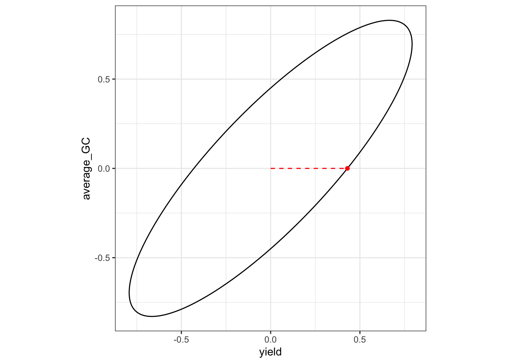
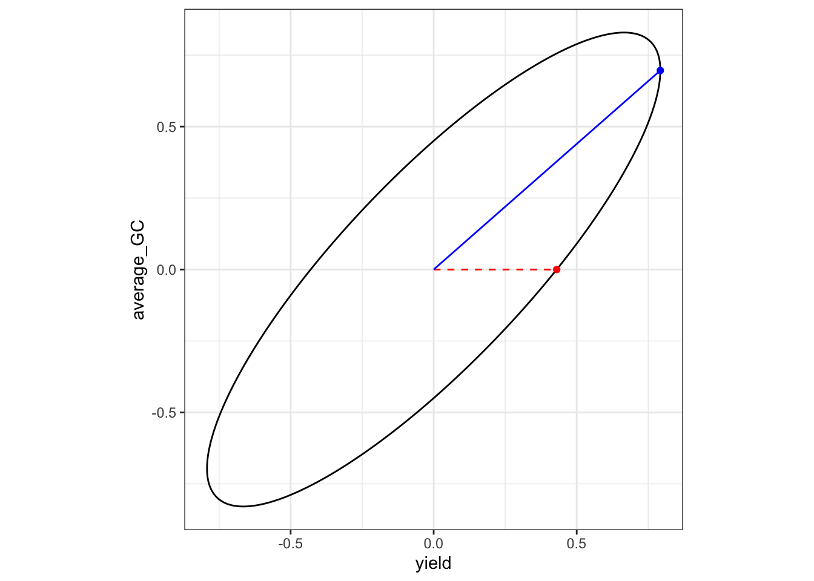
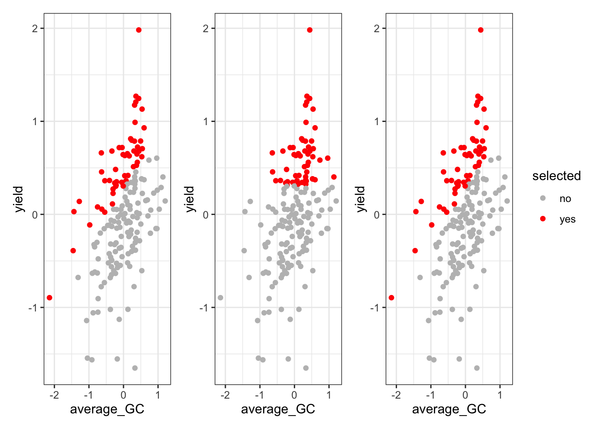

Online License checked out Wed Mar 25 14:02:39 2026Multitrait Selection Indeces
Theoretical Background
Selecting individuals based on multiple traits is a rather common practice in plant breeding, both for product development and parental selection. That selection is typically done based on an index that summarises all available information for a genotype into a single value.
A selection index for \(t\) standardized traits is defined as
\[ \mathbf{I} = \sum_{k = 1}^tb_ky_k = \mathbf{b}'\mathbf{y} \]
where \(\mathbf{b}\) represents the index coefficients. Typically, it is assumed that \(\sigma_I^2 = 1\), thus
\[ \operatorname{var}(\mathbf{b'y}) = \mathbf{b'}\operatorname{var}(\mathbf{y})\mathbf{b} = \mathbf{b'Pb} \]
Under the multitrait framework, \(\mathbf{P}\) refers to the variance covariance matrix between the selection unit, in this particular case, phenotypes, so that \(P_{jk} = \operatorname{cov}(y_j, y_k)\). The response to truncation selection on the index follows the breeders equation
\[ R_{g_j} = \frac{i}{\sigma_I}\operatorname{cov}(g_j, I) = i\sum_{k = 1}^t\operatorname{cov}(g_j, y_k)b_k = i\sum_{k = 1}^t\Gamma_{jk} b_k \]
It is important to notice that when selecting under BLUP, the formulation of the index, the variance of the Index and the response change to
\[ \mathbf{I} = \sum_{k = 1}^tb_k\hat{g}_k = \mathbf{b}'\mathbf{\hat{g}} \]
\[ \sigma_I^2 = 1 = \mathbf{b'}\operatorname{var}(\mathbf{\hat{g}})\mathbf{b} = \mathbf{b'Pb} \]
\[ R_{g_j} = i\sum_{k = 1}^t\operatorname{cov}(g_j, \hat{g}_k)b_k = i\sum_{k = 1}^t\Gamma_{jk} b_k \]
Thus, now \(P_{jk} = \operatorname{cov}(\hat{g}_j, \hat{g}_k) = \Gamma_{jk}\), following the properties of the BLUP (\(\operatorname{var}(\mathbf{\hat{g}}) = \operatorname{cov}(\mathbf{g, \hat{g}})\)). Besides, each trait response can be standardized by mutiplying by the inverse of a diagonal matrix \(H\) of the genetic standard deviations
\[ \mathbf{x} = i\mathbf{H}^{-1}\mathbf{\Gamma b} \]
We can used the equation above to solve for the coefficients
\[ \mathbf{b} = i^{-1}\mathbf{\Gamma}^{-1} \mathbf{H x} \]
Desired Gain Index
The desired gains coefficients represent the vector of standardize response that we would like to achieve for each of the traits of interest. However, the exact desired response is rarely achieved, since it must satisfy that \(\sigma^2_I = 1 = \mathbf{b'Pb}\). If we substitute \(\mathbf{b}\) from the previous equation we obtain
\[ \begin{align} i^{-1} \, \mathbf{x}^\top \mathbf{H} \mathbf{\Gamma}^{-1} \mathbf{P} \mathbf{\Gamma}^{-1} \mathbf{H} \mathbf{x} \, i^{-1} &= 1 \\ i^{-2} \, \mathbf{x}^\top \mathbf{H} \mathbf{\Gamma}^{-1} \mathbf{P} \mathbf{\Gamma}^{-1} \mathbf{H} \mathbf{x} &= 1 \\ \mathbf{x}^\top \mathbf{H} \mathbf{\Gamma}^{-1} \mathbf{P} \mathbf{\Gamma}^{-1} \mathbf{H} \mathbf{x} &= i^2 \\ \mathbf{x}^\top \mathbf{Q} \mathbf{x} &= i^2 \end{align} \]
In he equation above \(\mathbf{Q} = \mathbf{H} \mathbf{\Gamma}^{-1} \mathbf{P} \mathbf{\Gamma}^{-1} \mathbf{H}\) represents the matrix representation of an ellipsoide (high dimensional ellipse) in \(t\) dimensions. The shape and surface of the ellipse (if only 2 traits are considered) is determined by the intensity of selection, the correlation between traits, the heritability and the accuracy of each one of them.
That ellipse will then determine the response, which geometrically represents the intersection between a vector director (the desired vector) and an ellipse. This, mathematically, is obtained as follows
First, the response straight is defined as the desired vector times a proportionality constant \(l\)
\[ \mathbf{x} = l\mathbf{d} \]
Then, we substitute in the constraint equation and obtain
\[ \begin{align*} (l\mathbf{d})'\mathbf{Q}\, l\mathbf{d} &= i^2 \\[1mm] l^2 \mathbf{d}' \mathbf{Q} \mathbf{d} &= i^2 \\[1mm] l &= \frac{i}{\sqrt{\mathbf{d}' \mathbf{Q} \mathbf{d}}} \end{align*} \]
The maximized response is therefore given by \(\mathbf{x} = \frac{i}{\sqrt{\mathbf{d}'\mathbf{Qd}}} \mathbf{d}\), which represents where the vector of desired gains touch the surface of the ellipse. We will show this later.
Genetic Merit
A different approach is to specify the relative importance of genetic gains for each trait, which is known as the economic weight or merit coefficients. The merit function is defined as follows.
\[ M = \sum_{k = 1}^t a_k(\frac{g_k}{\sigma_{gk}}) = \mathbf{a'H^{-1}g} \]
Now, the merit coefficients measure not the genetic gains but its value. The optimization problem is thus
\[ \begin{aligned} \text{maximize} \quad & \operatorname{cov}(\mathbf{M, I}) \\ \text{subject to} \quad & \mathbf{b' P b = 1} \end{aligned} \]
Given that
\[ \begin{align} \operatorname{cov}(\mathbf{M, I}) &= \operatorname{cov}(\mathbf{a'H^{-1}g}, \mathbf{b'y}) \\ &= \mathbf{a'H^{-1}}\operatorname{cov}(\mathbf{g}, \mathbf{g})\mathbf{b}' \\ &= \mathbf{a'H^{-1}} \mathbf{\Gamma b'} \end{align} \]
We can write it like
\[ \begin{aligned} \text{maximize} \quad & \mathbf{a'H^{-1}} \mathbf{\Gamma b'} \\ \text{subject to} \quad & \mathbf{b' P b = 1} \end{aligned} \]
We will solve the Lagrange and equate the partial derivtaive with respect to b to 0 to obtain that
\[ \begin{aligned} \mathcal{L}(\mathbf{b}, \lambda) &= \mathbf{a'H^{-1} \Gamma b'} - \frac{\lambda}{2} (\mathbf{b' P b} - 1) \\[2mm] \frac{\partial \mathcal{L}}{\partial \mathbf{b}} &= \mathbf{\Gamma' H^{-1} a} - \lambda \mathbf{P b} = \mathbf{0} \\[1mm] \mathbf{P b} &= \frac{1}{\lambda} \mathbf{\Gamma' H^{-1} a} \\[1mm] \mathbf{b} &= \frac{1}{\lambda} \mathbf{P^{-1} \Gamma' H^{-1} a} \end{aligned} \]
Substituting \(b\) values into the Index equation and the constraint we obtain
\[ I_{SH} = \mathbf{a'H^{-1}\Gamma P^{-1}y} = \frac{\mathbf{a'H^{-1}\hat{\mathbf{g}}}}{\lambda} \]
\[ \begin{align*} \mathbf{b' P b} &= 1 \\[1mm] \mathbf{\frac{1}{\lambda} a' H^{-1} \Gamma P^{-1} P P^{-1} \Gamma H^{-1} a \frac{1}{\lambda}} &= 1 \\[1mm] \frac{\mathbf{a' H^{-1} \Gamma P^{-1} \Gamma H^{-1} a}}{\lambda^2} &= 1 \\[1mm] \frac{1}{\lambda} &= \frac{1}{\sqrt{\mathbf{a' Q^{-1} a}}} \end{align*} \]
Finally, once we now the maximal response we can solve for the coefficients
\[ \mathbf{b} = \frac{1}{\lambda} \mathbf{P^{-1} \Gamma' H^{-1} a} = \frac{\mathbf{P^{-1} \Gamma' H^{-1} a}}{\sqrt{\mathbf{a' Q^{-1} a}}} \]
Exercise
We will use data from the UW Madison potato breeding program. The data contains measurements for several traits for 176 individuals. We will run the analysis only for Yield and average_GC, for which the phenotypic covariance is around -0.33
traits <- c('yield', 'average_GC')
pheno <- read.csv('../data/example_2.csv') |>
na.omit() |>
select(uid, row, range, gen, traits) |>
mutate(
across(all_of(traits), \(x) as.numeric(scale(x))),
across(c(gen, uid), as.factor)
)
head(pheno) uid row range gen yield average_GC
1 1 1 1 MSGG190-1 0.2679540 1.1842913
2 2 2 1 W19016-2 -1.2309741 -0.5018588
3 3 3 1 W19ND1810Y-8 0.7892402 0.9100862
4 4 4 1 W19002-2 -0.2710771 1.4833665
6 6 6 1 W19007-18 0.3070735 -1.1829493
7 7 7 1 W19031-14 1.2788390 1.1251752To obtain \(\mathbf{P}\) and \(\mathbf{\Gamma}\) (which in this case are the same, as explained above) we need to fit the following multitrait model
\[ \mathbf{y} = \mathbf{\mu} + \mathbf{X \beta} + \mathbf{Z g} + \mathbf{\varepsilon} \]
assuming that
\[ \begin{aligned} \mathbf{g} &\sim \mathrm{MVN}(0, \mathbf{G}) \\ \boldsymbol{\varepsilon} &\sim \mathrm{MVN}(0, \mathbf{R}) \\ \mathbf{y} &\sim \mathrm{MVN}(\mathbf{X\beta}, \mathbf{V}) \end{aligned} \]
and that
\[ \begin{aligned} \mathbf{G} &= \mathbf{I}_n \otimes \boldsymbol{\Sigma}_g \\ \mathbf{R} &= \mathbf{I}_{nt} \otimes \boldsymbol{\Sigma}_e \\ \mathbf{V} &= \mathbf{Z G Z'} + \mathbf{R} \end{aligned} \]
We will use asreml and sommer to estimate the variance-covariance matrices \(\mathbf{\Sigma_g}\) and \(\mathbf{\Sigma_e}\). For the genetic correlation we will assume an unstructure variance covariance structure, meaning that the model will estimate estimate a variance per traits plus a covaraince components between them (\(t*(t+1)/2\) parameters). For the residuals, sommer (at least mmes) does not allow to estimate covariances between the errors for the different traits, thus, a diagonal matrix will be used. For asreml, an unstructured matrix will be employed.
Lets compare the estimations
mod <- asreml(
fixed = cbind(yield, average_GC) ~ trait,
random = ~ us(trait):gen,
residual = ~ id(units):us(trait),
verbose = F,
data = pheno
)ASReml Version 4.2 25/03/2026 14:02:40
LogLik Sigma2 DF wall
1 -196.9051 1.0 384 14:02:40
2 -183.1404 1.0 384 14:02:40
3 -170.1529 1.0 384 14:02:40
4 -164.7082 1.0 384 14:02:40
5 -163.8275 1.0 384 14:02:40
6 -163.8169 1.0 384 14:02:40
7 -163.8166 1.0 384 14:02:40sigma_g <- matrix(0, nrow = 2, ncol = 2)
sigma_g[upper.tri(sigma_g)] <- summary(mod)$varcomp[2, 1]
sigma_g[lower.tri(sigma_g, diag = T)] <- summary(mod)$varcomp[1:3, 1]
sigma_e <- matrix(0, nrow = 2, ncol = 2)
sigma_e[upper.tri(sigma_e)] <- summary(mod)$varcomp[6, 1]
sigma_e[lower.tri(sigma_e, diag = T)] <- summary(mod)$varcomp[5:7, 1]
dimnames(sigma_g) <- dimnames(sigma_e) <- list(traits, traits)
cov2cor(sigma_g);cov2cor(sigma_e) yield average_GC
yield 1.0000000 0.6814824
average_GC 0.6814824 1.0000000 yield average_GC
yield 1.0000000 0.2659441
average_GC 0.2659441 1.0000000pheno_long <- pheno |>
pivot_longer(
cols = traits,
names_to = 'trait',
values_to = 'value'
) |>
arrange(trait) |>
mutate(across(c(trait, gen, uid), as.factor))
mod_sommer <- mmes(
fixed = value ~ trait,
random = ~ vsm(usm(trait), ism(gen)),
rcov = ~ vsm(dsm(trait), ism(units)),
data = pheno_long,
verbose = F
)Version out of date. Please update sommer to the newest version using:
install.packages('sommer') in a new session
Use the 'dateWarning' argument to disable the warning message.sommer_sigma_g <- cov2cor(mod_sommer$theta$`vsm(usm(trait), ism(gen`)
sommer_sigma_e <- cov2cor(mod_sommer$theta$units)
dimnames(sommer_sigma_g) <- dimnames(sommer_sigma_e) <- list(traits, traits)
cov2cor(sommer_sigma_g);cov2cor(sommer_sigma_e) yield average_GC
yield 1.0000000 0.8684211
average_GC 0.8684211 1.0000000 yield average_GC
yield 1 0
average_GC 0 1mod_mmer <- mmer(
fixed = cbind(yield, average_GC) ~ 1,
random = ~ vsr(gen, Gtc = unsm(2)) ,
rcov= ~ vsr(units, Gtc = unsm(2)),
data = pheno
)iteration LogLik wall cpu(sec) restrained
1 -169.416 14:2:40 0 0
2 -162.514 14:2:40 0 0
3 -159.178 14:2:40 0 0
4 -158.573 14:2:40 0 0
5 -158.556 14:2:40 0 0
6 -158.554 14:2:40 0 0
7 -158.554 14:2:40 0 0cov2cor(mod_mmer$sigma$`u:gen`) yield average_GC
yield 1.0000000 0.6826778
average_GC 0.6826778 1.0000000cov2cor(mod_mmer$sigma$`u:units`) yield average_GC
yield 1.0000000 0.2652669
average_GC 0.2652669 1.0000000As it is shown, assuming that the errors are uncorrelated for the two trais on the same experimental unit (plot) is forces the model to explain all the correlation through the additive part, infalting the additive correlations. It is important thus, to properly model residuals too.
Now we will reconstruct all the necessary matrices to show how to compute \(\mathbf{\Gamma}\). In particular, we will need the marginal variance of the BLUPs (\(\operatorname{var}(\hat{\mathbf{g}})\))
n <- n_distinct(pheno$gen)
t <- n_distinct(traits)
ids <- unique(pheno$gen)
names_G <- as.vector(outer(traits, ids, paste, sep = ":"))
y <- as.matrix(pheno_long[, 'value'], ncol = 1)
G <- diag(nrow = n) %x% sigma_g
Z <- model.matrix(~ -1 + gen:trait, pheno_long)
X <- model.matrix(~ trait, pheno_long)
R <- diag(nrow(pheno)) %x% sigma_e
V <- Z%*%G%*%t(Z) + R
V_inv <- solve(V)
P <- V_inv - V_inv %*%X%*%solve(t(X)%*%V_inv%*%X)%*%t(X)%*%V_inv
C11 <- t(X) %*% solve(R) %*% X
C12 <- t(X) %*% solve(R) %*% Z
C21 <- t(Z) %*% solve(R) %*% X
C22 <- t(Z) %*% solve(R) %*% Z + solve(G)
C <- rbind(
cbind(C11, C12),
cbind(C21, C22)
)
C_inv <- solve(C)
rhs <- rbind(
t(X) %*% solve(R) %*% y,
t(Z) %*% solve(R) %*% y
)
ans <- C_inv %*% rhs
PEV <- G - G%*%t(Z)%*%P%*%Z%*%G
var_uhat <- G - PEVNow, we will use that marginal variance matrix to compute the population covariance matrix \(\mathbf{B}\). If only random effects are considered, it is computed as described by Legarra 2016
\[ \mathbf{B}_{jk} = E[V_y] = \overline{\operatorname{diag}(\mathbf{L})} - \overline{L_{..}} \]
where \(\mathbf{L}\) represents the marginal variance of BLUPs with genotypes nested traits. Right now, however, matrix is organized with traits nested genotypes, meaning that the diagonal is composed of \(n\) \(t \times t\) variance covariance matrices for each genotype
\[ \operatorname{var}(\hat{\mathbf{g}}) = \begin{bmatrix} M_{g_1} & \cdots & M_{g_1g_n} \\ \vdots & \ddots & \vdots \\ M_{g_ng_1} & \cdots & M_{g_n} \end{bmatrix} = \begin{bmatrix} \underbrace{ \begin{bmatrix} \sigma^2_{t_1} & \sigma_{t_1 t_2} \\ \sigma_{t_2 t_1} & \sigma^2_{t_2} \end{bmatrix} }_{g_1} & \cdots & M_{g_1g_n} \\ \vdots & \ddots & \vdots \\ M_{g_ng_1} & \cdots & \underbrace{ \begin{bmatrix} \sigma^2_{t_1} & \sigma_{t_1 t_2} \\ \sigma_{t_2 t_1} & \sigma^2_{t_2} \end{bmatrix} }_{g_n} \end{bmatrix} \]
The reason why this happens is because of how we computed \(\mathbf{G}\) ( and thus \(\operatorname{var}(\mathbf{\hat{g}})\)), taking into account the kronecker product properties
\[ \mathbf{G} = \mathbf{I_n} \otimes \mathbf{\Sigma_g} = \mathbf{I_n} \otimes \begin{bmatrix} \Sigma_{g,11} & \Sigma_{g,12} \\ \Sigma_{g,21} & \Sigma_{g,22} \end{bmatrix} = \begin{bmatrix} \mathbf{\Sigma_g} & 0 & \cdots & 0 \\ 0 & \mathbf{\Sigma_g} & \cdots & 0 \\ \vdots & \vdots & \ddots & \vdots \\ 0 & 0 & \cdots & \mathbf{\Sigma_g} \end{bmatrix} \]
In summary
names <- as.vector(outer(traits, unique(pheno$gen), paste, sep = ":"))
dimnames(G) <- dimnames(var_uhat) <- list(names, names)
var_uhat[1:4, 1:4] yield:MSGG190-1 average_GC:MSGG190-1 yield:W19016-2
yield:MSGG190-1 0.353862806 0.356893731 -0.006617443
average_GC:MSGG190-1 0.356893731 0.569742214 -0.014095849
yield:W19016-2 -0.006617443 -0.014095849 0.367455236
average_GC:W19016-2 -0.005589161 -0.008721287 0.352213574
average_GC:W19016-2
yield:MSGG190-1 -0.005589161
average_GC:MSGG190-1 -0.008721287
yield:W19016-2 0.352213574
average_GC:W19016-2 0.525589866Let’s rearrange the matrix to compute \(\mathbf{B}\).
nt <- nrow(var_uhat)
idx <- split(1:nt, f = rep(1:t, times = n)) #contains the position for each traits variances
B <- matrix(0, ncol = t, nrow = t)
for (i in 1:t) {
for (j in i:t) {
idxi <- idx[[i]]
idxj <- idx[[j]]
L <- var_uhat[idxi, idxj]
B[i, j] <- B[j, i] <- mean(diag(L)) - mean(L)
}
}
dimnames(B) <- list(traits, traits)
P <- Gamma <- B # P equals Gamma since we are working under BLUP
Gamma yield average_GC
yield 0.2933634 0.3170480
average_GC 0.3170480 0.4857651Last thing we need to compute the ellipse matrix is \(\mathbf{H}\)
H <- diag(sqrt(diag(sigma_g)))
dimnames(H) <- list(traits, traits)
H yield average_GC
yield 0.6836008 0.0000000
average_GC 0.0000000 0.8407621Therefore
Q <- H%*%solve(Gamma)%*%H
Q yield average_GC
yield 5.406599 -4.340037
average_GC -4.340037 4.939067Desired
Now we only need to define our desired gains to obtain the maximal response given our ellipse. Let’s imagine we want to simultaneously advance both traits despite its negative correlation
desired <- c(1, 0)
intensity <- 1
x.opt <- desired * intensity/sqrt(crossprod(desired, Q%*%desired)) # apply dimensionality constant
b <- (solve(Gamma) %*% H %*% x.opt)/intensity #substitute response to solve for coefficients
b_desired <- b/sqrt(sum(b^2)) # normalize vector
desired_results <- data.frame(
traits = traits,
response = x.opt,
coefficients = b_desired
)
desired_results traits response coefficients
yield yield 0.4300688 0.8374175
average_GC average_GC 0.0000000 -0.5465637We can additionally plot the selection tradeoff. The dot represent the response, while the dashed line represents the direction of the desired gain vector.
eg <- eigen(Q[1:2, 1:2])
lens <- intensity / sqrt(eg$values)
angle <- atan(eg$vectors[2, 2] / eg$vectors[1, 2])
p1 <- ggplot() +
geom_ellipse(
aes(x0 = 0, y0 = 0, a = lens[2], b = lens[1], angle = angle)
) +
coord_fixed() +
theme_bw() +
xlab(traits[1]) +
ylab(traits[2]) +
geom_segment(
aes(
x = 0,
y = 0,
xend = x.opt[[1]],
yend = x.opt[[2]]
),
col = "red",
lty = 2
) +
geom_point(
aes(
x = x.opt[[1]],
y = x.opt[[2]]
),
col = "red"
)
p1
Merit
To show the differences between the two approaches, we will use the same coefficients but following the Merit function. Therefore we will obtain the maximized response and from there the coefficients
merit <- c(1, 0)
x <- Variable(t)
constraints <- list(quad_form(x, Q) <= intensity^2)
v <- matrix(merit, nrow = 1)
objective <- Maximize(v %*% x)
problem <- Problem(objective, constraints)
result <- solve(problem)
x <- as.numeric(result$getValue(x))
b <- (solve(Gamma) %*% H %*% x) / intensity
b_merit <- b / sqrt(sum(b^2))
merit_results <- data.frame(
traits = traits,
response = x,
coefficients = b_merit
)
merit_results traits response coefficients
yield yield 0.7923197 1.000000e+00
average_GC average_GC 0.6962239 -3.848515e-15Visually, the dashed red line shows the direction of the merit vector, while the blue line segment is the projection of the point on the ellipsoid that maximizes genetic merit.
x2 <- merit * intensity / sqrt(as.numeric(crossprod(merit, Q %*% merit)))
p2 <- ggplot() +
geom_ellipse(aes(x0 = 0, y0 = 0, a = lens[2], b = lens[1], angle = angle)) +
coord_fixed() +
theme_bw() +
xlab(traits[1]) +
ylab(traits[2]) +
geom_segment(
aes(x = 0, y = 0, xend = x2[[1]], yend = x2[[2]]),
col = "red",
lty = 2
) +
geom_point(aes(x = x2[[1]], y = x2[[2]]), col = "red") +
geom_segment(
aes(x = 0, y = 0, xend = x[[1]], yend = x[[2]]),
col = "blue"
) +
geom_point(aes(x = x[[1]], y = x[[2]]), col = "blue")
p2
Werner et al 2025 (bioarxive)
In this article (Werner et al 2025), the authors proposed to compute the Index as \(I_{DGI} = \mathbf{d'\bar{V}^{-1}\hat{g}}\), where \(\mathbf{\bar{V}} = \sum_{i = 1}^v \mathbf{V}_{ii}/n\) with \(\mathbf{V}_{ii}\) representing the \(t \times t\) marginal variance covariance matrix of individual \(i\). Conceptually, it represent an alternative to compute the population covariance by just averaging all the submatrices in the diagonal of \(\operatorname{var}(\hat{\mathbf{g}})\) shown above. They state that ‘We have found that this provides a good approximation to the full selection index for balanced data’. However, the supplementary material in which they prove that is not available. So, let’s test that.
V_w <- matrix(0, t, t)
for (i in 1:n) {
idx <- ((i - 1) * t + 1):(i * t)
V_ii <- var_uhat[idx, idx] / n
V_w <- V_w + V_ii
}
dimnames(V_w) <- list(traits, traits)
round(V_w, 3); round(B, 3) yield average_GC
yield 0.293 0.317
average_GC 0.317 0.486 yield average_GC
yield 0.293 0.317
average_GC 0.317 0.486The matrices \(\mathbf{\bar{V}}\) and \(\mathbf{B}\) are identical. Let’s take a look at the index values, computed as
\[ \mathbf{I}_{DGI} = \mathbf{d'(\bar{V}^{-1} \otimes I_n)\hat{\mathbf{g}}} \]
Selection
Based on those estimates, we can extract the BLUPs, build the Indeces and compare the selection of top 30% individuals.
blups <- as.matrix(ans[grep('gen', rownames(ans), value = T), ]) |>
as.data.frame() |>
rownames_to_column('gen') |>
mutate(
gen = gsub('^gen', '', gen),
gen = gsub('trait', '', gen)) |>
separate(gen, into = c('gen', 'trait'), sep = ':') |>
arrange(gen, desc(trait)) |>
rename(blup = V1)
I_desired <- kronecker(diag(n), t(b_desired)) %*% as.matrix(blups[, 'blup'], ncol = 1)
I_merit <- kronecker(diag(n), t(b_merit)) %*% as.matrix(blups[, 'blup'], ncol = 1)
I_w <- (t(desired)%*%solve(V_w) %x% diag(n)) %*% as.matrix(blups |> arrange(desc(trait)) |> select(blup), ncol = 1)
rownames(I_desired) <- rownames(I_merit) <- unique(blups$gen)
plot_df <- blups |>
pivot_wider(names_from = trait, values_from = blup)
df_desired <- cbind(plot_df, I_desired) |>
mutate(selected = ifelse(I_desired > quantile(I_desired, 0.70), 'yes', 'no'))
p1 <- ggplot(df_desired, aes(x = average_GC, y = yield, color = selected)) +
geom_point() +
scale_color_manual(values = c('yes' = 'red', 'no' = 'grey')) +
theme_bw() +
theme(legend.position = 'none')
df_merit <- cbind(plot_df, I_merit) |>
mutate(selected = ifelse(I_merit > quantile(I_merit, 0.70), 'yes', 'no'))
p2 <- ggplot(df_merit, aes(x = average_GC, y = yield, color = selected)) +
geom_point() +
scale_color_manual(values = c('yes' = 'red', 'no' = 'grey')) +
theme_bw() +
theme(legend.position = 'none')
df_werner <- cbind(plot_df, I_w) |>
mutate(selected = ifelse(I_w > quantile(I_w, 0.70), 'yes', 'no'))
p3 <- ggplot(df_werner, aes(x = average_GC, y = yield, color = selected)) +
geom_point() +
scale_color_manual(values = c('yes' = 'red', 'no' = 'grey')) +
theme_bw()
p1 + p2 + p3
More information about how to compute restricted index can be found in Vignette 3 of StageWise paper Endelman 2023. The code used for this workshop was derived from the StageWise::gain() function from the same package, which can be used to compute the coefficients of interest.